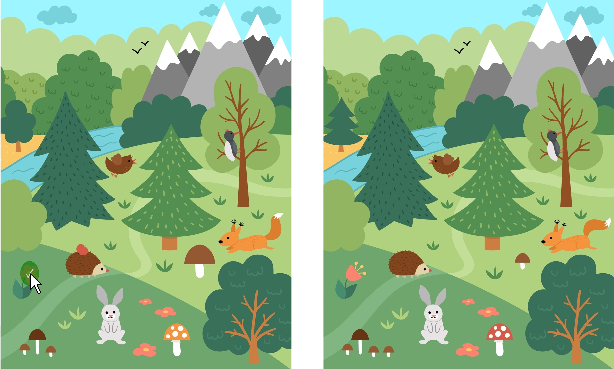
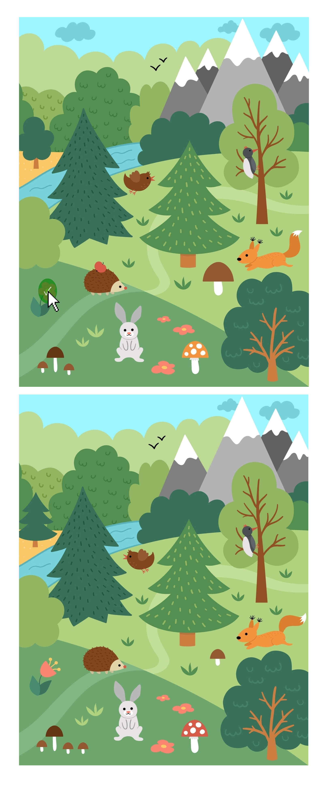
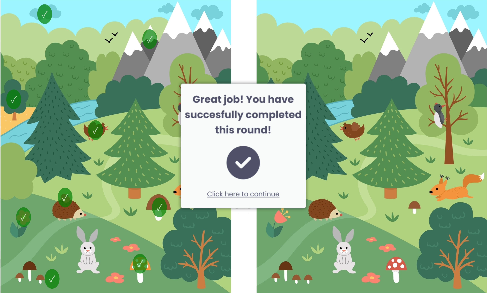
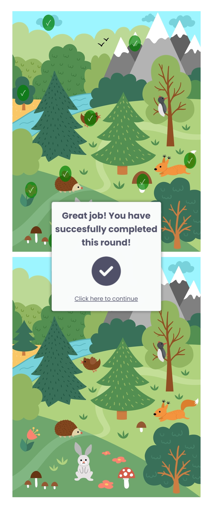

You will be asked to spot 10 differences between the images. The images will be oriented horizontally if you are using a wide-screened device (laptop, desktop, etc); otherwise, they will be displayed vertically.
 Click on the spotted difference in the left/top image; if indeed correct, the area you selected will be highlighted with a green circle .


Once you are done, you will be automatically prompted to continue.
You will start off first with a practice round to get a feel of how to complete the task; then, you will move on to the official round. If you would like to, you may skip the practice round by clicking on the "Skip Practice Round" button you will find at the top right of the page.
Play Game